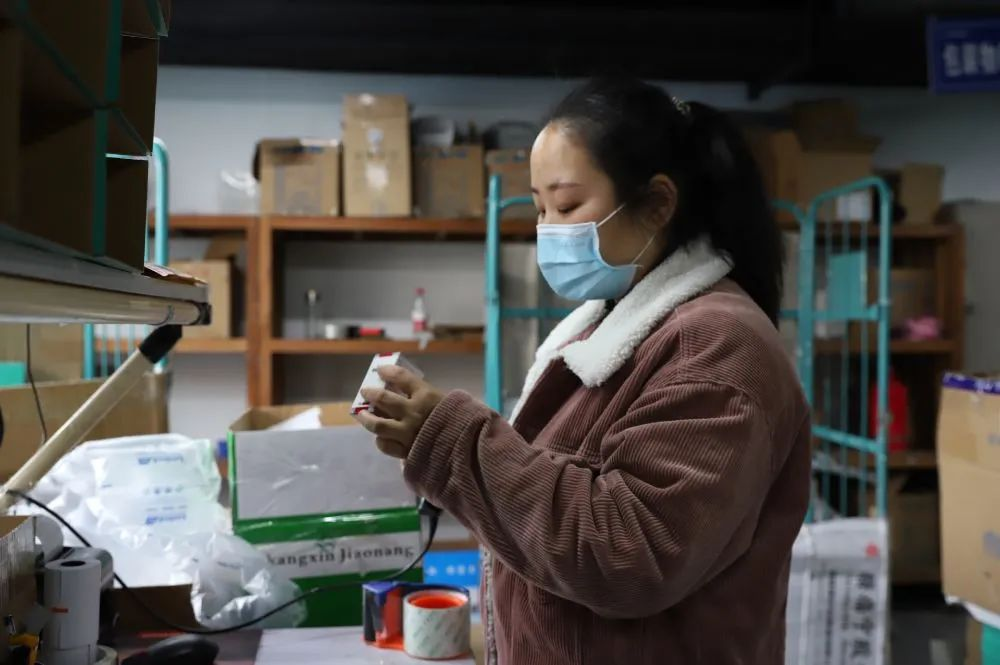

44名痊愈者26人复阳，专家建议出院标准要严，上海要查肛拭子
原文链接 备份链接 对于一种新发传染病 我们宁可严格一点 “我们的出院标准太宽了!”武汉大学人民医院呼吸与危重症医学科副主任医师、副教授张旃日前表示。 最近，成都、武汉与广东等多地出现了出院患者复检呈阳性的情况，其中广东14%的出院患 …
文｜丁畏、邢吟欢
胡迪在「舒利迭」的瓶身上，又画完了一个「正」字。
那是儿子宁宁的救命药，每天吸一次，当画完第12个「正」字，这瓶药就空了。
此处风光秀美，从院子里可以看见群山间云雾缭绕。在这个宁静小村里的每一天，胡迪都如坐针毡。
「孩子的药得备够。」胡迪带着儿子宁宁回湖北老家过年前，医生特地嘱咐她。
宁宁5岁，患有过敏性哮喘，这是一种无法治愈，但可控的慢性病。经过了多年集中治疗，近半年来，宁宁的病情趋于稳定，只需要每日使用一种名为「舒利迭」的吸入剂，便不会发作。
胡迪是细心的母亲，总是随身为宁宁带着吸入剂，算好使用次数，一瓶可以吸60次，能一直用到3月2日。
对于只打算回老家过个年的胡迪而言，这剂量是够的。但疫情来了，湖北首当其冲，老家村子封了，出不去，也进不来了。
对一般人来说，就地停留隔离已经够揪心了，但对儿子宁宁来说，则是性命攸关。哮喘是一种不发作则已，发作则颇为凶险的疾病。买不到药，一旦哮喘发作，也无法就医，宁宁的肺功能可能出现损伤，甚至出现呼吸骤停，危及生命。
宁宁的危机并不在少数。仅湖北地区就有1300万慢性病患者，放眼全国，这个数字则高达3亿。
诸如癫痫、哮喘、糖尿病等许多原本可控的慢性病，在这个春天，遭到新旧疾病的双重威胁。他们因隔离、物流受阻或医疗资源紧张，消耗着最后的救命药，成为一个个无援的孤岛。
「窄门」快关上了
胡迪的老家在宜昌，三峡库区深山里的一座村庄。从宜昌市区出发，经过漫长的盘山公路才能抵达。
今年是胡迪第一次带宁宁回家，她想让孩子看看自己长大的地方，也和外公外婆多一些亲近。在做出这个谨慎的决定前，她还特地征得了医生的同意。
宁宁的过敏性哮喘是出生后不久发现的，胡迪和丈夫为此耗尽心力，有时一周要带着孩子跑三次医院。
在过去的几年里，她总是小心翼翼，如履薄冰。
作为一个母亲，看着孩子哮喘发作，无疑是一种沉痛的折磨。没发作时，宁宁和同龄的孩子一样，发作时，先是咳嗽，接着是更剧烈的咳嗽，他的呼吸道里会发出一种异样的声音，「像拖拉机一样」，它有一个专业术语——哮鸣音。
然后是急促的呼吸，达到极高的频率。「那个速度，连我数起来都觉得吃力。」胡迪说。
就像呼吸道被锁住了，只留下一道窄门。一个孩子生命所需的全部氧气，都只能从这道窄门里过。
最严重的一次，宁宁张着嘴大口呼吸、鼻翼扇动。周围都是空气，他却总是吸不够，直到嘴唇发紫，医学上对应这一症状的术语叫「紫绀」，是身体缺氧的提示。
经历过几次之后，胡迪对咳嗽、打喷嚏格外敏感。无论何时，宁宁的一声咳嗽，都会令她心里一紧，担心这是哮喘发作的前兆。
在病情还不稳定的时候，因为担心剧烈运动诱发哮喘，宁宁也失去了同龄孩子的一部分乐趣。每每看见其他孩子追逐嬉戏时，宁宁也很想加入他们，但总会被母亲制止。
「等你身体好了，我们再玩，好吗？」胡迪哄着儿子。
通常这时，宁宁都只能悻悻然低着头，发出一声「哦」。但下一次胡迪带着他路过小区游乐场时，宁宁仍会朝着嬉闹声的方向一直张望。
如今，宁宁的病情总算是稳定了。胡迪想着，这次就让儿子玩得开心点吧。
在村子里的几天，宁宁像是要补偿过去的不甘似的，整天和表兄妹们在长满浅草的荒地里追跑，上田埂上放鞭炮，好像急着把童年都补回来。
没想到，才过了没几天，疫情就爆发了。
起初武汉封城，胡迪并没有太放在心上。直到他们所在的村子也被封了，她开始有些慌张。每一天，眼看着剩余的药越来越少，胡迪感到，儿子呼吸道里那扇「窄门」，快要关上了。
必须尽快想办法找到「舒利迭」，并想办法送进这个偏远的小村庄。她开始动用一切可能的关系，寻求一切可能的渠道。因为无法离开村庄，胡迪每天电话打个不停。
父母都是种了一辈子地的庄稼人，对外面的世界了解不多，母亲看着女儿那样焦心，自己却帮不上忙，也只好沉默，尽量不提、不问，担忧却写在脸上。一切与找药有关的电话，胡迪总是避着母亲，走到院子外拨打或接听。
在院子里玩耍的宁宁并不知道这一切，仍和其他孩子打闹着。胡迪看着活泼的儿子，突然觉得眼前一切显得有些不真实。这一幅田园间其乐融融的场面，太过于脆弱，随时可能崩塌。几天后，如果仍找不到药，宁宁就可能面临性命之虞。她又想起了急促的呼吸声和紫色的嘴唇。
宁宁的困境，也是疫情下慢性病患者们的普遍困境。即便是城市里的患者，也往往一药难求。
独居武汉的一位70岁乳腺癌患者，用完了她的他莫昔芬片，那是一种白色的小药丸，用于抑制癌细胞生长。一位在孝感的脑梗患者断药已两个星期，一开始还能减少用量，从一天两次，到一天一次，再到隔天一次，到后来只剩两粒药，他舍不得吃，留着权作心里安慰。
患类风湿关节炎的老人，因为断药，已经开始出现「晨僵」症状，早晨醒来无法活动关节。阿里健康还收到来自湖北地区1000名以上肝炎患者的求助，因为断药，暴露在病毒全面反弹的风险里。
而他们还只是湖北慢性病患者的冰山一角。
有一群人，可是要天天上医院的
当外界注意到这些「孤岛」时，情况已非常危急了。随着断药的逼近，上社交媒体求救的慢性病患者越来越多。
「我在湖北，父亲慢阻肺，家里的常备药马上就吃完，药店没货医院不敢去，我要急疯了！」
「父亲直肠癌晚期，因为疫情无法去医院开药，现在疼痛难忍，我该怎么帮助他？」
「外婆患有糖尿病，村里书记去药店没买到瑞格列奈片，已经断药了，怎么办？急！急！急！」
「有谁知道哪家药店有卖替米沙坦片的吗？我爸爸糖尿病患者，药已经用完很多天了，有这方面消息的朋友吗？拜托了！」
众多患者上网反映断药情况
沉在水面下的冰山部分，很快被站在最前方的瞭望者发现。
远在杭州的亭净，对疫情的消息比多数人要敏感。这位前医生，现在是阿里健康的运营专家，她开玩笑地说，「掌管着中国最大的线上医疗平台。」
看着当年的同学和前同事们，纷纷赶赴武汉支援抗疫一线，在后方的亭净也按捺不住，决定做点什么。
疫情发生后不久，她就连夜发动同事在线工作，推出了「免费线上问诊平台」，招募全国医疗专家，在线为病人进行初步问诊，以分流线下医院的压力。几天后，全国就有超过200万人因得到在线问诊，避免了在医院可能的交叉感染。
2月初，在这个问诊平台上，亭净注意到了一个新现象，许多病人找医生并不是为了问诊，而是想通过医生买药。
阿里健康平台上，一位互联网医生正在家里为慢病患者看诊
真正让亭净感到触动的，是她在平台信息上发现，有人正在找胰岛素。
这是一种需要冷链运输的药物，疫情期间交通管制，胰岛素的短缺并不奇怪。但这个信息却在亭净脑中如警钟一响。因为胰岛素是晚期糖尿病患者的日常用药，每天都得注射，一旦停药可能导致生命危险。
这是一个危机的信号。
「所有人的注意力都在新冠肺炎身上，但人们却忘了，有一群人天天都要去医院的。」亭净说。
「您的药，找到了」
几乎是出于医生的本能，她立刻在线上召集分散全国的伙伴们开会：「我们需要马上开启一个找药行动。」各组人员分头行动，把电话打得滚烫，超过50家全国知名药企收到了这场援助行动的消息，阿里健康随即推出面向全国的「慢病福利计划」，利用平台的信息资源，与五十多家合作的药企一起为全国的慢性病患者找药。
原本在阿里健康负责品控的小二高健，自愿承担起了客服的任务。在找药行动的最初阶段，由于支援活动刚刚启动，全湖北慢病求助者的药，都只能靠高健「人肉」去找。

阿里健康小二高健在家中办公，通过互联网为慢病患者找药
她先从APP后台导出找药信息，包括患者基本情况、需要的药量、剩余的药量等。「大概三分之一的人已经没药了，或者剩着最后一点舍不得吃，其他人的药量也只有几天，最多不超过十天。」
之后，她再把这些信息汇总，发到合作药企的沟通群，由药企找药并安排物流。
当药企也无法提供所需药品时，高健就只能靠自己了。有时，她用以往在药业内的人脉去找药；有时，她也用「笨办法」，打开自己的手机，在天猫上的药商一家一家地搜。
她的电脑桌面堆满了登记患者信息的Excel表格，每天打上百个电话，联系平台商家或合作伙伴。
但即便她使出了浑身解数，也无法满足所有人，因为平台上的需求早已爆棚。一天早上，高健照例从后台导出求助信息，她看了一眼都懵了。
「当日求助量已接近一千。」
这也意味着，高健的「人肉」找药模式不可持续了。好在阿里健康的程序员们耗了三天三夜，迅速开发出了一套「找药精灵」程序，卸下了高健身上的重担。
「找药精灵」在技术上打通了阿里健康和钉钉，只要患者在阿里健康完成缺药登记，这些信息立即就会「跳进」商家群，然后，来自武汉湖北及全国各地的药商便会主动认领。

阿里健康平台上为药品进行最后确认的复核包装员
同时，在湖北断药患者的钉钉群里，一个智能AI会不断带来一些令人振奋的好消息：「XX，您的药找到了」、「XX，您的药已发货」。
「它是一种人文关怀。」负责开发的产品经理说。
即便找到的不是自己的药，患者也会为他人感到开心，为陌生的病友发去祝福或鼓励。
被困在宜昌农村的胡迪也是在这个时候，偶然在阿里健康上做了缺药登记。在此之前，她已经尝试过各种办法，也用尽了能想到的一切关系，但仍无所获。
她每天埋头抱着手机刷资讯，任何关于找药的只言片语，都会被她像救命稻草一样抓住。她也试过一些电商，药倒是找到了，但卖家一听是湖北，还是偏远的山村里，便坦言发不了货。
她只能死马当活马医，在各种找药平台上留下自己的信息。
胡迪自己也没想到，其中偶然的一次登记，改变了宁宁的命运。
接力，送过去
积累了十多天的找药经验后，阿里健康的小二们意识到，其实真找不到的药很少，大多数药都卡在物流环节。

一位阿里健康小二自愿前往孝感送药
宁宁的父亲远在杭州，他曾想尽办法弄到了「舒利迭」，却苦于物流不畅，无法寄出。他跑遍了附近所有的快递网点，所有人都告诉他「湖北寄不了」。这位焦急的父亲在一个顺丰网点哀求了许久，得到的回复是：「东西可以给你收下，但不保证什么时候可以送到。」
他想了想，把药留在了自己身上。因为他做好了打算，如果实在没办法，就自己开车一路硬闯，从杭州把药送到宜昌。只要孩子能活，他愿意付出任何代价。
那天胡迪走出院子跟丈夫通电话，「我感觉他都要哭了，还是一直忍着。」
打通物流的压力还是落在了亭净的身上，和快递公司沟通得多了，她的脑中有了一张湖北省交通地图，上面大片大片都是红色，意味着物流进不去的地方。经过多方辗转，亭净找到了在湖北通行权限最高的EMS。当湖北的城市和乡村都还处于封锁状态时，EMS几乎可以通行所有地方。

一名志愿者用私家车为患者送药，湖北地区许多药都是由当地志愿者完成「最后一公里」
新的问题又出现了，大部分阿里健康的合作药商，与EMS没有协议，无法通过其发货。为此，阿里健康的小二们只能采取一个折中办法：先用其他快递把药发到武汉，再在武汉当地找到一家与EMS有协议的药企转寄。
承担这项中转任务的，是一位名叫夕木的志愿者，当她在阿里健康的朋友羲禾找她帮忙时，她当即就答应下来。夕木要做的事，是收下所有从外地寄过来的药，将它们带去附近的邮局，通过EMS寄往湖北境内的各个市县、乡镇、山村。
到目前为止，她已经为超过1000名慢性病断药患者寄去了药。
起初，夕木还能开车出门，后来由于私家车禁行政策，她只能徒步从家走到邮局。来回要走上一个小时。她尽量保证每天只出门一次，攒够几十个包裹就去一趟邮局。
夕木家里还有个12岁的女儿。每次寄药回来，夕木都会把鞋放在阳台通风，再将全身衣服换下，消毒、清洗。然后给自己洗个澡，往所有触摸过的地方喷撒酒精，撕掉出发前裹在手机上的保鲜膜。
女儿知道她正在做的事情。母女俩在一起时，女儿会频繁地摸夕木的额头，确认她没有发烧，然后松一口气。
这天，夕木收到了两瓶「舒利迭」，她赶在中午前将药带到邮局寄出，然后给收件人发去了一条信息。对方，正是故事开头的胡迪。

在仓库里等待寄给慢性病患者的药，每一个包裹都是一个希望
赶在最后一滴药前，到了
在宜昌深山中急得五内俱焚的胡迪，收到了一条信息：「药已寄出，请注意查收。」
紧绷了一个月的心终于稍稍松弛了些，但药没拿到手，胡迪的心还是悬着。
又过了几天，胡迪心心念念的「舒利迭」终于到达了镇上，由镇卫生院的医生送到了村的卫生所。
在村卫生所里，胡迪见到了镇上来的医生，对方拿出药时还不忘说笑：「听说你这个药搞得很不容易啊。」
胡迪顾不得体面，现场用力撕开包裹。当看到那个熟悉的小瓶子时，她知道，宁宁有救了。
这位紧张了大半个月的母亲，忍不住喊了一声「耶」。
这天是3月1日。药瓶上的最后一个「正」字，正好还差最后一笔。
就在胡迪收到药的同时，在阿里健康上登记药品需求的用户已遍及湖北全境，大多来自当地乡镇。其中慢病用药需求占比高达87%。到目前为止，已为半数以上的登记用户送出亟需药品。

阿里健康一名小二打通重重关卡为孝感当地慢病患者送药现场
在武汉市蔡甸区张湾街道的一个村庄里，患强制性脊柱炎的中年人不再缺药，孝感一名患肺癌老人在重庆找到需要的靶向药，黄冈罗平县的心脏病患者不再为「保命丸」忧心。
在全国，数万名慢病患者也陆续通过阿里健康平台解除他们的断药危机，被封锁在浙江台州乡下的大三阳患者不再恐惧病情恶化，远在更远的北方，救急药也正从哈尔滨运往冰雪封冻的东北乡下。
胡迪回到家时，母亲正在厨房做饭，胡迪悄悄走了进去，轻轻喊了一声：
「妈，药找到了。」
老人先是一怔，随即慌乱地在灰褐色的围裙上揩手，不知道该如何庆祝，胡迪看到母亲：「脸都笑得开了。」
院子里，宁宁正在玩耍，胡迪站在一旁静静看了一会，唤了他一声。宁宁看见她回来了，喊了一声「妈妈」，便小跑着冲来扑在胡迪怀里。
胡迪把孩子抱起来，稍微使些劲搂在怀里，头放孩子的一边肩膀上。在宁宁眼里，这又是乡村生活中无忧而快乐的一天。
或许等他长大后，母亲会向他解释，这一天的背后，有那么多来自远方的善意。
（文中胡迪、夕木为化名）
没看够？
长按二维码关注《人物》微信公号
更多精彩的故事在等着你

原文链接 备份链接 对于一种新发传染病 我们宁可严格一点 “我们的出院标准太宽了!”武汉大学人民医院呼吸与危重症医学科副主任医师、副教授张旃日前表示。 最近，成都、武汉与广东等多地出现了出院患者复检呈阳性的情况，其中广东14%的出院患 …
原文链接 备份链接 作为一名医生，我十分清楚在每一个新冠肺炎患者背后，都有一个备受煎熬的家庭，这个坎能不能过去，需要大家一起扛。而随着武汉封城时间越来越长，一些非新冠肺炎的病患，同样也在默默承受着煎熬。 口述 | 郑 华 整理 | …
原文链接 备份链接 心理医疗队在疫情发生一个多月的时间点来武汉，时机很好，我们希望在疫情还没有结束的应激期，帮助他把焦虑缓解下来，以免造成长期影响。 记者 | 黄 祺 武汉新冠肺炎疫情一个多月后，以精神科专科医生为主要成员的心理医疗队，由 …
原文链接 备份链接 我先跳过2月21日-26日，在武汉的街头见闻，将27日-29日，2月这最后三天的情况，日常见闻发在这里吧。 此前的文章 《武汉，这些天的街头巷尾》，以及《武汉，这些天来的街头巷尾（之二）》。 2月27日 26号，武 …
原文链接 备份链接 出院并不等于彻底痊愈 2月27日，已经出院19天的徐州居民王先生核酸检测呈阳性，被再次收入定点医院医学观察。 王先生在2月9日出院，经过14天隔离点观察后回家。回家后三天，王先生在新闻上看到部分康复者复检呈阳性，主 …